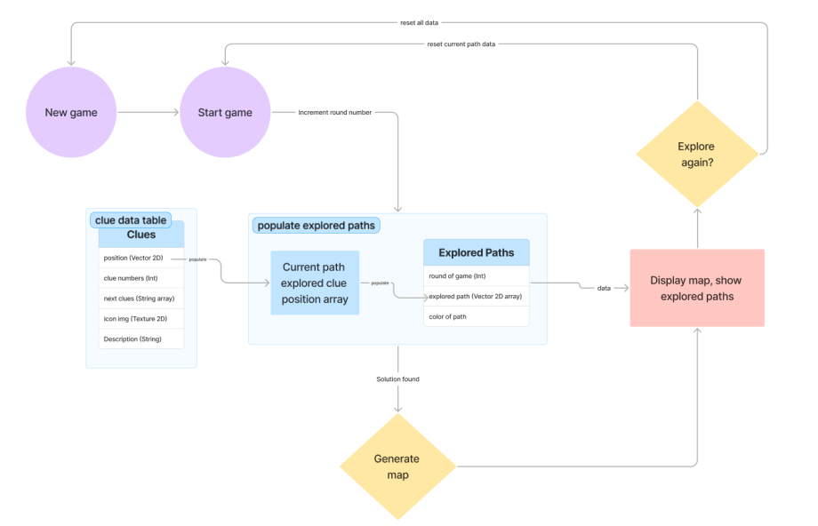

Chenyi Wang
Whispertrace
Adventure Puzzle Game
2025.01 - 2025.05

Whispertrace is an adventure puzzle game designed to provoke reflection and awareness of people's infinite imagination and creativity while highlighting the limitations of GenAI.
The game will provide the player with a situational puzzle, and the player will follow the clues to find possible solutions. Depending on the player's choices, the solutions can be varied.
The main inspiration for this project is the “black box” effect in modern technology, especially Artificial Intelligence (AI), which leads to user overwhelm and mistrust. The design of this work is inspired by the decision tree and pruning algorithm in AI, which takes a series of decisions to reach an optimal result.
This work gamifies this process, incorporating puzzles to allow the player to experience it while reflecting on many other possibilities in the decision-making process.
Check out the interactive information card.
Game available on itch.io.
Overview
IDM 2025 SPRING SHOWCASE
Concept
The “black box” is a system that can be viewed in terms of its inputs and outputs without any knowledge of its internal workings. With the advancement of Artificial Intelligence (AI) technology, the black box model is being increasingly used in various industries, which exposes users to more uncertainty in their daily use and even on a social level. When using a large language model chatbot, such as ChatGPT, to solve a problem, users often get wrong answers due to a variety of reasons, including the ambiguity of the prompts or the differences in the way the model thinks, but the reasons will not be revealed to the user. For example, if asking ChatGPT, “How many r's does strawberry have?”, it will firstly answer with “The word strawberry has 2 r's.” due to its tokenizer, which is obviously a mistake that should not be made in human cognition.
The core themes of this project include:
This project expresses the core theme in a circuitous way, as it shifts the spotlight to human cognition itself instead of the AI, while using some metaphors to convey the message implicitly.
Design
The key design idea of this project focused on the "unknown" nature of the "black box", and utilized the properties of the decision tree algorithm in machine learning to build a decision-making experience that invites the user to deeply engage in the pruning process of AI. Rather than being provided with the optimal output directly, the user can go through multiple steps of choices to explore one of the possibilities among multiple avenues towards the final solution, and has the opportunity to observe all of the other parallel outcomes that were not chosen at the end. This approach can provoke users to reflect on the overall performance of AI decision-making as well as the possibilities of the unknown.
In order to highlight the main messages of limitations of AI, and appropriate human-AI collaboration (i.e., AI is a tool, not a solution), that are intended to be conveyed, this project has set up a specific application context by leveraging the Situation Puzzle game. It is also known as the lateral thinking puzzle, which is a game played with at least two people, and begins with a sentence describing a scene that is unusual or intriguing. The person describing the scene knows the answer, and the other player(s) attempt to find that out by asking only yes-or-no questions.
For better game experience and engagement, this project focused on one specific pre-generated puzzle and then visualize the entire process of solving it, including the use of AI assistance and human creative thinking. The whole process of solving puzzles will be synthesized, restructured, and eventually visualized, and then made into a gamified experience so that users can get a better sense of storytelling as they explore the journey.
Puzzle in the game:
I woke up in the middle of the night, a strange noise coming from the forest around my cabin. It was a hoot, but it sounded different, almost… painful.
I grabbed a flashlight and stepped outside. There, lying on the ground, was a single white feather, and unlike any owl’s feather I had ever seen.
I bent down to pick it up when I heard the hoot again. But this time, it was far.
What did I just find?
The puzzle is then further broken down and brainstormed by analyzing each single keyword in the puzzle to expand as many possibilities/meanings as possible for later narratives. Then I utilized AI to solve the puzzle to generate more potential solutions, and also invited my friends to brainstorm and think out of the box to come up with more creative solutions. All the ideas are synthesized after, and I selected 10 of the most interesting solutions that I decided to ultimately present in my work. These 10 solutions are then further unpacked and brainstormed on the clues and joints for each solution to form a complete, well-structured story for the game. All of the identified clues and their interconnections were then visualized into a path structure map for final presentation to the player in the game. The forest in the puzzle will be visualized in the bird’s-eye view, and the player will be set to start from the middle of a dark forest. The path structure is purposely designed to be complex, and the paths are intertwined with each other to visualize the complexities of thinking during the puzzle-solving process.
To match the mysterious vibe, a hand-drawn/sketched style is used for the visual elements, along with typewriter-style fonts to bring a better sense of storytelling. This design is also in line with imperfect design, further emphasizing my concept that digital tools (e.g., AI) are not only practical but are also an extension of humanity in a technological society.
For the end of the game experience, I want to provoke my audiences to reflect on their creative thinking while highlighting the limitations in AI’s imagination. So I approached this by comparing the player’s exploration and the total available possibilities and present the result as an exploration report. The data I used in this report includes the total available solutions, the total available clues, the percentage of exploration on the chosen path based on the number of branches available in that path, as well as the total possibilities available in the entire topology structure.
In addition, I designed a human detection section in my report, which is inspired by the AI detection tools that are widely used nowadays for inspecting the writing content, to evaluate the overall performance of the player’s behavior during the game based on the data I would be tracking, while highlighting the core theme of AI is not the solution. I also designed different comments based on the percentage to add to the entertainment of the game while encouraging players to explore more.
Development
Since the storyline I designed had 10 different endings and 26 different clues in between, each of which contained different information, in order to streamline the development process, I first designed the data structures and data flow so that I could program the rest of the logic more easily. In terms of the development tool, I utilized the tool that I am most familiar with, Unreal Engine. I choose to use a game engine because it has better functionalities for UI development to help me implement with better visuals and interactivity more efficiently. On top of that, my current design requires a heavy amount of programming to implement the logic and involves multiple data tables, so using Unreal Engine can save me the time of having to learn a new tool from scratch, and the data table file format that come with Unreal Engine can be very helpful in streamlining the programming process as I don't need to import and access data tables separately. With the well-organized path topology structure in the clue data table, the logical flow of clue progression is simplified, and I will be able to draw all explored paths accurately on the map at the end of the game by accessing the data populated during the process.
Tools: Unreal Engine 5, Figma